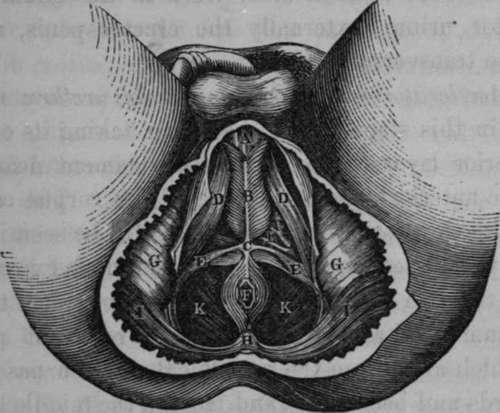
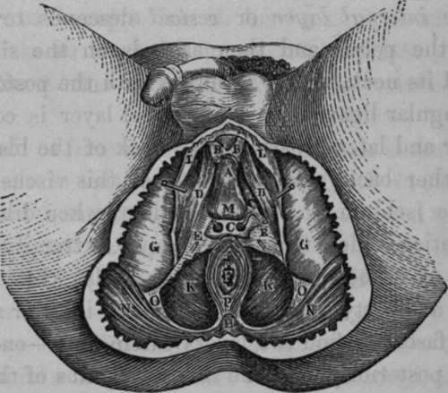

The Accelerator Urinae Or Compressor Urethrae Muscle
Description
This section is from the book "Anatomy Of The Arteries Of The Human Body", by John Hatch Power. Also available from Amazon: Anatomy of the Arteries of the Human Body, with the Descriptive Anatomy of the Heart.
The Accelerator Urinae Or Compressor Urethrae Muscle
The Accelerator Urinae Or Compressor Urethrae Muscle will be seen in this stage of the dissection taking its origin from the anterior layer of the triangular ligament near its base, and more anteriorly from the side of the corpus cavernosum penis; the third origin of this muscle will be seen in a future state of the dissection arising by a tendinous expansion common to the two muscles, and situated between the corpus spongiosum urethrae and the corpus cavernosum penis: the fibres which arise from the corpus cavernosum pass obliquely downwards and backwards, and meet in the middle line underneath the urethra; as they approach each other they present on the inferior surface of the urethra the form of the letter V, the apex being directed posteriorly. The fibres which arise by a common tendon above the corpus spongiosum pass directly downwards, and by their union surround the urethra completely like a sphincter muscle : the fibres from the triangular ligament pass downwards and forwards. All these different fibres are inserted along the middle line in a raphe, which runs along the inferior surface of the urethra and terminates posteriorly in the central point of the perineum. The Erector Penis arises from the inner surface of the tuberosity of the ischium, internal to the origin of the crus penis; it passes somewhat spirally with regard to this latter structure, in the fibrous covering of which its tendinous insertion is ultimately lost. The Transversus Perinei muscle arises from the inner surface of the tuberosity of the ischium close to the origin of the latter muscle: its fibres pass forwards and inwards towards its fellow of the opposite side : these two muscles meet at, and are inserted into, the central point of the perineum. They present, not a straight line as their name implies, but a curve, the concavity of which looks backwards towards the anus, the convexity in the opposite direction. These two muscles constitute a natural line of separation between the anal and perineal portions of this region. In the triangular space formed by the three muscles at each side of the urethra, we find the long perineal artery nerve and vein, and at the base of the triangle we find the transverse artery of the perineum. These two arteries are situated, shortly after their origins, on the cutaneous surface of the transversus perinei muscle.
Fig. 48. Represents the Surgical Anatomy of the Ano-Perineal region in the Male, after the Integument, Superficial Fascia, and Superficial Vessels have been removed.
A, The Corpus Spongiosum Urethrae. B. The Acceleratores Urinae Muscles, with their central Raphes C. The Central Point of the Perineum. D. D. The Right and Left Erector Penis Muscles. e, E. The Transverse Muscles of the Perineum. F, The Anus. G, G, The Tuberosities of the Ischia. H. The Coccyx. I, I, The Great Glutaei Muscles. K, K, The Levatores Ani Muscles. L, The Left Artery of the Bulb, seen through an opening made in the anterior layer of the Triangular Ligament.
After having carefully removed these muscles, together with the perineal arteries veins and nerves at both sides, the triangular ligament of the urethra or deep perineal fascia will be exposed. It occupies the deepest portion of the proper perineal space: its apex passes in front of the subpubic ligament to which it is attached, and is ultimately lost in affording a covering to the upper surface of the corpus cavernosum penis: its sides are attached to the rami of the ischia and pubes, where they become continuous with the obturator fascia; and its base presents the appearance of a double arch, though not well defined, somewhat resembling the velum pendulum palati: the middle portion of the base is connected with the central point of the perineum, and the arched portion at each side is lost by becoming continuous with the anterior " cul de sac" of the ischio-rectal fossa under cover of the transversus perinei muscle. The triangular ligament is divisible into two layers, the anterior or superficial, and the posterior or deep; and situated between the layers we find the following parts:—externally, close to the rami of the ischia and pubes, the pudic artery of each side; near the base, and more internally, the two arteries of the bulb, with their small branches to the bulb of the urethra and to Cowper's glands: still nearer to the middle line we find the small glands of Cowper, with their ducts; a quantity of exceedingly fine areolar tissue is also situated here, and a small part of the membranous portion of the urethra near the bulb corresponds to the interval between the layers. Through an opening in this ligament is transmitted the urethra: the part of this canal which pierces the ligament corresponds to the junction of the membranous portion with the spongy : consequently, the spongy portion, which includes the bulb, is in front of the triangular ligament, and the principal portion of the membranous and the entire of the prostatic portions are behind it. The opening for transmitting the urethra is, in the adult, about an inch below the symphysis pubis, and two inches from the tuberosity of the ischium, and about half an inch above the centre of the base of the ligament: this orifice does not present a distinct margin, as there is a production sent off from its anterior layer forwards over the spongy portion, and another backwards (funnel-shaped) from its posterior layer, which invests the membranous and prostatic portions of the urethra. It is this latter production that is usually termed the posterior layer of the triangular ligament: it unites with the vesical fascia and with the recto-vesical fascia, as it surrounds the prostate gland. An American writer states that the part of it on the inferior surface of the prostate gland is reflected on the front of the rectum, so as to form a "cul de sac" opposed to that of the peritoneum; and the division of this "cul de sac" in lithotomy he conceives to be attended with considerable risk of abscesses and peritonitis.
The student is now recommended to attend to the anatomy of the fasciae, of the pelvis, with which that of the perineum is intimately connected. When the peritoneum has been removed from the iliac fossa of either side, the fascia iliaca will be exposed; there is, however, between the peritoneum and the iliac fascia, a layer of adipose and loose areolar tissue intermixed, which extends in every direction, as well into the pelvis as on the back part of the structures which form the anterior wall of the abdomen. If we examine this sub-peritoneal layer of fascia, we will find that as we trace it internally towards the true pelvis, it becomes more condensed in its structure, and, assuming the appearance of a distinct fascia, it becomes connected with the fascia iliaca along the external side of the external iliac artery; it then passes around this artery and its accompanying vein ; and internally to the latter vessel it is attached to the pelvic fascia. It is not always of equal strength, but sometimes we are able to trace distinct fibrous bands in this structure, passing across the artery and the vein. By means of this fascia the vessels are connected together in a proper sheath, and are more or less securely fixed upon the iliac fascia which passes behind them. This fascia is continuous, inferiorly behind Poupart's ligament, with the fascia propria of Sir A. Cooper, and has sometimes been described as a prolongation of this latter structure upwards over the vessels : below Poupart's ligament it still continues its course along the femoral vessels, forming their sheath. There is no doubt that it was this fascia which presented an obstruction to the passing of the ligature in Mr. Abernethy's second operations on the external iliac artery. In describing this operation, he says, " The pulsations of the artery made it clearly distinguishable from the contiguous parts, but I could not get my finger round it with the facility which I expected. This was the only circumstance which caused any delay in the performance of the operation. After ineffectual trials to pass my finger beneath the artery, I was obliged to make a slight incision on either side of it, in the same manner as is necessary when it is taken up in the thigh, where the fascia which binds it down in its situation is strong."*
Fig. 49. Represents the Surgical Anatomy of the Male Perineum after the Integument, Superficial Fascia, portion of the Acceleratores Urinae Muscles, Superficial Vessels, etc. have been removed.
A, The Corpus Spongiosum Urethras. B, B, The anterior forked termination of the Acceleratores Urinae Muscles. C, Cowper's Glands and their Arterial Twigs from the Artery of the Bulb of each side, between the layers of the Triangular Ligament; a portion of the anterior layer has been removed. D, D, The Right and Left Erector Penis Muscle. E, E, The Triangular Ligament or Deep Perineal Fascia. F, The Auus. G, G, The Ischiatic Tuberosities. H, The Coccyx. K, K, The Le-vatores Ani Muscles. L, L, Portion of the Superficial Fascia, and its connection to the Rami of Ischium and Pubis. M, The Bulb of the Urethra. N, N, The Great Glutaei Muscles. O, O, Portion of the Great Sciatic Ligament. P, The Superficial Sphincter Muscle.
The student may now follow the course of the fascia iliaca. This fascia is attached to the crest of the ilium, covers the psoas and iliacus internus muscles and anterior crural nerve; and passes underneath or behind the external iliac vessels, in order to descend into the true pelvis. At its connection with the brim of the pelvis, it receives the name of pelvic fascia. Having descended as far as the upper edge of the levator ani, it divides into two layers, between which this muscle is placed; the internal layer or vesical descends towards the bottom of the pelvis, and then ascends on the side of the bladder and its neck, where it unites with the posterior layer of the triangular ligament. This vesical layer is confined to the anterior and lateral part of the neck of the bladder, and goes no farther back, along the side of this viscus, than the spine of the ischium: hence the bladder, when dilating, performs a rotation which throws its upper extremity forwards; on account of its being tied down anteriorly, while the posterior part is at liberty to dilate. From the inferior surface of the vesical fascia we find two layers passing off,—one between the rectum posteriorly, and the inferior fundus of the bladder and under surface of the prostate gland, called the rectovesical or Tyrrell's fascia; the other passing along the sides and on the under surface of the rectum, called the rectal fascia. The external layer of the pelvic fascia, or the obturator fascia, descends between the obturator internus muscle and levator ani, and divides into the proper obturator fascia and the ischio-rectal or anal fascia. Now, these are the two fasciae which line the ischio-rectal cavity,—viz., the obturator on the outside, and the ischio-rectal on the inside: the former has its external surface applied to the obturator muscle and pudic artery, and its inferior edge is inserted into a production of the great sacro-sciatic ligament; while the latter, peculiarly thin, is applied to the outer surface of the levator ani and lower part of the rectum.
* Abcrnethy's Surgical Works, vol. i. p. 307.
The arteries of the ano-perineal region will be described when speaking of the branches of the internal pudic.
Continue to: